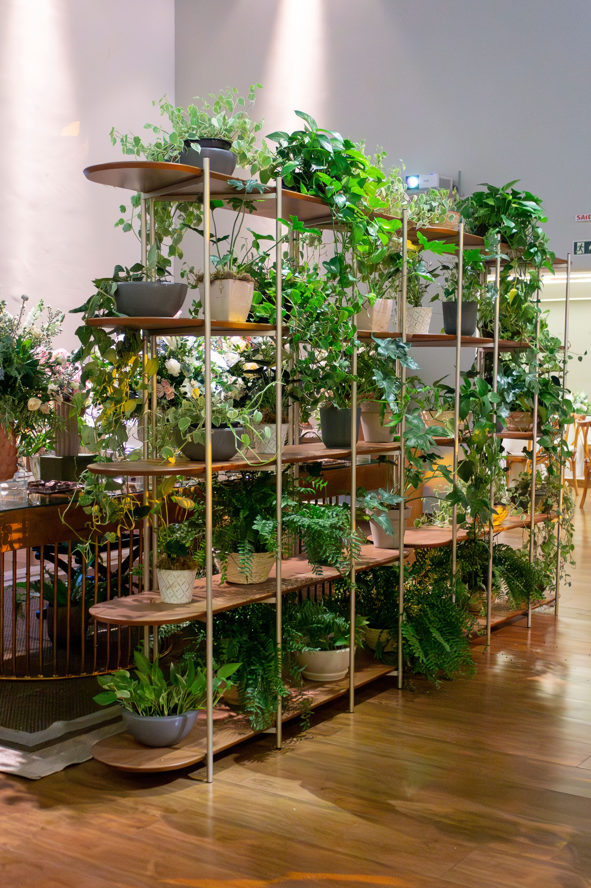

En este artículo
Introducción
Aprende a integrar plantas en la decoración de casa según luz, tamaño, macetas y distribución, creando ambientes verdes sin perder funcionalidad.
Antes de empezar, conviene observar las condiciones reales de la vivienda y definir qué problema quieres resolver. Las soluciones más efectivas suelen combinar planificación, mantenimiento y decisiones proporcionadas, en lugar de depender de un único truco.
En esta guía encontrarás un método práctico para avanzar paso a paso, con criterios que puedes adaptar al tamaño de tu casa, presupuesto y rutina. La prioridad es mejorar el espacio sin crear nuevos problemas de seguridad, limpieza o mantenimiento.
Haz cambios graduales y evalúa el resultado. Cuando una intervención implica instalaciones, estructuras o trabajos especializados, consulta a un profesional cualificado antes de modificar elementos que puedan afectar la vivienda.
Analizar el espacio y la luz antes de decorar con plantas
Las plantas no deben elegirse únicamente por cómo se ven en una fotografía. Primero observa la luz disponible. Identifica ventanas, orientación, horas de sol directo y zonas de sombra. Una planta colocada donde no recibe la luz que necesita terminará debilitándose, aunque inicialmente encaje perfectamente con la decoración.
Mide el espacio físico. Considera no solo el tamaño actual de la planta, sino su crecimiento. Una monstera joven puede ocupar poco y después extender hojas grandes. Una palmera o ficus puede acercarse al techo. Conocer el tamaño adulto evita trasladar constantemente ejemplares que ya no caben.
Revisa recorridos y actividades. No coloques macetas donde obliguen a esquivarlas, interfieran con puertas o puedan caer con facilidad. En hogares con niños o mascotas, investiga además si la especie es tóxica y utiliza ubicaciones estables.
La humedad y temperatura también importan. Evita colocar plantas sensibles junto a calefactores, aire acondicionado o corrientes intensas. Baños luminosos pueden beneficiar especies que prefieren humedad, mientras habitaciones secas requieren otras opciones.
Piensa en el acceso al riego. Una planta situada sobre una estantería muy alta puede ser bonita, pero si regarla exige una escalera cada pocos días quizá no sea práctica. La decoración sostenible debe facilitar el mantenimiento.
Empieza con pocas plantas. Observa durante varias semanas cómo responden y aprende su ritmo de riego. Después añade otras solo si existe un lugar adecuado. Este proceso gradual reduce compras impulsivas y permite construir una colección saludable.
Consejo práctico
Observa el resultado durante varios días antes de realizar nuevos cambios. Ajustar una decisión cada vez permite identificar qué funciona realmente en tu espacio y evita gastos o intervenciones innecesarias.

Combinar tamaños, alturas y macetas de manera equilibrada
Una composición interesante utiliza diferentes alturas sin convertir la habitación en una jungla difícil de mantener. Una planta grande puede actuar como punto focal, mientras ejemplares medianos y pequeños acompañan en estantes o mesas. Deja zonas sin vegetación para que la mirada descanse.
Las macetas forman parte de la decoración. Puedes crear continuidad repitiendo materiales, colores o formas, aunque no sean idénticas. Cerámica neutra, terracota, metal y fibras pueden combinarse si existe una paleta controlada.
El recipiente debe cumplir primero las necesidades de la planta. Utiliza macetas con drenaje o un sistema de maceta interior dentro de un cubremaceta. Nunca permitas que el agua quede acumulada alrededor de raíces por priorizar un recipiente decorativo.
Los soportes elevan plantas y ayudan a crear capas, pero deben ser estables y soportar el peso del sustrato mojado. Comprueba la base antes de colocarlos en zonas de paso. Los soportes colgantes requieren fijaciones adecuadas al techo o pared.
En estanterías, alterna plantas con libros y objetos en lugar de llenar cada balda. Las especies colgantes suavizan líneas rectas, pero controla su longitud para que no cubran interruptores, pantallas o superficies de trabajo.
Las agrupaciones de tres o cinco macetas pueden verse cohesionadas cuando varían ligeramente en altura. Aun así, agrupa únicamente especies cuyas necesidades de luz sean compatibles con esa ubicación. La composición visual nunca debe obligar a una planta a vivir en condiciones incorrectas.
Consejo práctico
Observa el resultado durante varios días antes de realizar nuevos cambios. Ajustar una decisión cada vez permite identificar qué funciona realmente en tu espacio y evita gastos o intervenciones innecesarias.
Mantener equilibrio entre decoración, cuidado y funcionalidad
Una casa con plantas debe seguir siendo fácil de limpiar y utilizar. Deja espacio para mover macetas cuando necesites aspirar o limpiar hojas. Utiliza platos protectores y revisa que la humedad no dañe muebles, madera o paredes.
El polvo reduce el aspecto saludable del follaje y puede interferir con la luz que reciben las hojas. Limpia suavemente según el tipo de planta, evitando productos abrillantadores no recomendados. Aprovecha ese momento para revisar plagas.
Rota algunas plantas de forma moderada si crecen inclinadas hacia la luz, pero evita cambiar continuamente de ubicación especies sensibles. Si una planta prospera en un punto, no la muevas solo para renovar la decoración.
Utiliza la vegetación para reforzar funciones. Una planta alta puede suavizar una esquina vacía; varias macetas pequeñas pueden animar una repisa; una hierba culinaria puede decorar la cocina si recibe luz suficiente. Cada planta debe tener una razón además de ocupar espacio.

Evita depender de tendencias que muestran plantas en lugares imposibles, como baños sin ventanas o rincones completamente oscuros. Las fotografías pueden utilizar iluminación temporal. En una vivienda real, la salud de la planta depende de condiciones constantes.
Revisa la colección cada temporada. Algunas plantas necesitarán trasplante, poda o un lugar más luminoso. Si una especie ya no se adapta a tu casa, regalarla a alguien con mejores condiciones puede ser preferible a mantenerla debilitada. Una decoración verde funciona cuando las plantas están sanas.
Consejo práctico
Observa el resultado durante varios días antes de realizar nuevos cambios. Ajustar una decisión cada vez permite identificar qué funciona realmente en tu espacio y evita gastos o intervenciones innecesarias.
En espacios pequeños, aprovecha la verticalidad con prudencia. Estantes resistentes, soportes de pared y macetas colgantes liberan suelo, pero cada instalación debe soportar el peso de la planta después del riego. Utiliza anclajes apropiados y evita colocar recipientes pesados sobre camas, sofás o zonas donde una caída pueda causar daño.
Las plantas pueden ayudar a conectar visualmente habitaciones. Repetir una especie o un tipo de maceta en varios puntos crea continuidad. No necesitas colocar vegetación en cada rincón; dos o tres repeticiones bien ubicadas pueden ser suficientes para que toda la casa se sienta relacionada.
Si utilizas plantas como separadores, elige especies con volumen pero que permitan mantener la circulación. Una jardinera larga puede delimitar un comedor, mientras una planta alta puede marcar una esquina. Comprueba que la ubicación no reduzca luz ni bloquee ventilación.
En mesas de comedor o trabajo, prioriza plantas compactas que no dificulten conversaciones ni ocupen superficie necesaria. Una maceta baja puede funcionar como centro de mesa, pero debe poder retirarse fácilmente para limpiar o utilizar el espacio.
Las plantas artificiales pueden utilizarse en zonas donde una planta viva no tendría luz suficiente, pero elige materiales de buena calidad y límpialas regularmente. No presentes un rincón oscuro como adecuado para una especie viva solo porque una fotografía decorativa muestra vegetación allí.
El color del follaje también influye. Hojas verdes oscuras aportan profundidad, variedades claras iluminan composiciones y plantas con patrones pueden actuar como acento. Evita combinar demasiadas especies muy llamativas en una zona pequeña si buscas un ambiente tranquilo.
Planifica vacaciones y ausencias. Si una colección requiere riego frecuente, instala un sistema probado o pide ayuda. No aumentes el agua justo antes de viajar como compensación, porque algunas plantas pueden sufrir por exceso de humedad.
Una colección equilibrada crece a un ritmo que puedes cuidar. Antes de adquirir una nueva planta, pregúntate dónde vivirá, cuánta luz recibirá, quién la regará y cuánto espacio ocupará dentro de un año. Si no puedes responder, espera antes de comprar.

En salones amplios, una planta de porte vertical puede equilibrar muebles bajos y ocupar una esquina difícil. Antes de elegir un ejemplar grande, comprueba el ancho de puertas y ascensores para poder introducirlo y retirarlo. Considera también el peso de la maceta.
En dormitorios, evita colocar tantas plantas que dificulten la ventilación o limpieza. Una o dos especies bien adaptadas a la luz suelen ser suficientes. Las plantas no sustituyen ventilación ni purificadores cuando existe un problema de calidad del aire.
En la cocina, las hierbas culinarias pueden ser decorativas y útiles si reciben suficiente luz. Colócalas lejos de llamas, salpicaduras de grasa y calor excesivo. Utiliza recipientes con drenaje y cosecha regularmente para mantener crecimiento compacto.
En oficinas, una planta puede suavizar la presencia de pantallas y equipos. Evita ubicar macetas sobre ordenadores, regletas o documentos importantes, porque un derrame puede causar daños. Un soporte independiente junto al escritorio es una opción más segura.
Si la luz natural es insuficiente, una lámpara de cultivo adecuada puede ampliar las posibilidades. Debe seleccionarse según intensidad, distancia y duración de uso. Sigue las instrucciones eléctricas y utiliza temporizadores seguros si deseas automatizar el ciclo.
Las hojas secas o dañadas deben retirarse con herramientas limpias cuando corresponda. No podes de forma excesiva solo para mantener una planta dentro de un espacio demasiado pequeño. Si su crecimiento natural no encaja, busca otra ubicación o una especie más compacta.
Al elegir plantas para una composición, considera también la velocidad de crecimiento. Especies rápidas pueden cambiar el equilibrio en pocos meses y exigir trasplantes frecuentes. Las de crecimiento lento mantienen durante más tiempo la escala prevista, aunque pueden costar más cuando se compran en tamaños grandes.
Evita colocar todas las macetas directamente sobre suelos delicados. Utiliza platos, bases o protectores que permitan revisar humedad. Levanta periódicamente los recipientes para comprobar que no exista condensación, manchas o daño en madera y otros pavimentos sensibles.
Si utilizas humidificadores cerca de plantas tropicales, controla la humedad real de la habitación y limpia el equipo según las instrucciones. Un exceso de humedad puede favorecer moho en paredes y muebles. No modifiques el ambiente de toda la casa únicamente para satisfacer una especie difícil de mantener.
Finalmente, aprende a aceptar cambios estacionales. Algunas plantas producen menos hojas en invierno o cambian su ritmo de crecimiento. No añadas fertilizante o agua automáticamente para forzar actividad. Investiga el ciclo de la especie y adapta la decoración a su evolución natural.
Preguntas frecuentes
¿Cuántas plantas debo poner en una habitación?
No existe un número fijo. Depende del tamaño, la luz y el mantenimiento disponible. Empieza con pocas y añade solo cuando exista un lugar adecuado.
¿Cómo combinar las macetas sin que parezcan desordenadas?
Repite uno o dos elementos, como color, material o forma, y varía tamaños de manera controlada.
¿Puedo poner plantas en un baño sin ventana?
La mayoría necesita luz. Un baño sin luz natural normalmente no es adecuado para mantener plantas a largo plazo sin iluminación de cultivo apropiada.
¿Qué hacer si una planta crece demasiado?
Investiga si tolera poda o trasplante. Si su tamaño adulto supera el espacio, considera trasladarla a un lugar más adecuado.
¿Es mejor agrupar las plantas o repartirlas?
Ambas opciones pueden funcionar. Agrupar crea impacto visual y puede facilitar cuidados, mientras repartir pequeñas cantidades aporta verde sin concentrar demasiado volumen.
Conclusión
Cómo integrar plantas en la decoración de casa sin recargar los espacios es más sencillo cuando las decisiones parten de las condiciones reales del espacio y no únicamente de una tendencia o una fotografía de referencia.
Empieza por las mejoras de mayor impacto, mantén una rutina razonable y evita acumular soluciones que añadan trabajo sin resolver una necesidad concreta. Medir, observar y comparar antes de comprar suele ahorrar tiempo y dinero.
También conviene revisar los resultados con el paso de las semanas. La casa cambia con el uso diario y una solución que parecía adecuada puede necesitar pequeños ajustes. Corregir pronto evita que un detalle se convierta en un problema mayor.
Con planificación y constancia puedes conseguir un resultado funcional, equilibrado y duradero, manteniendo siempre la seguridad y el mantenimiento como parte de la decisión.